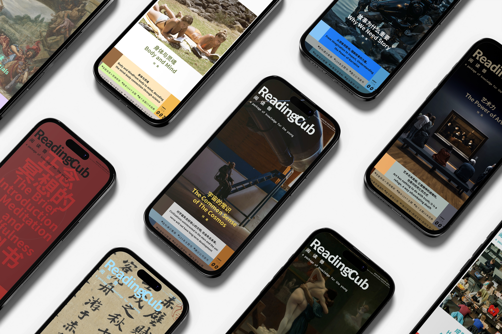
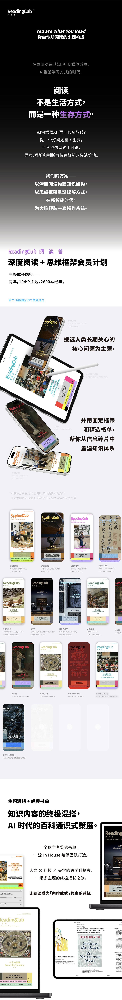

阅读兽 ReadingCub 是一个大型通识阅读内容产品。核心设计理念：不仅告诉读者「读什么」，更帮读者建立「怎么想」的认知框架。每个主题包含25本书的深度书摘 + 26个关键词的百科级解读。我主导了多主题从知识框架搭建、书稿撰写、学术核校到成稿交付的全链路工作，并开发了支撑该生产流程的AI工具链。
选书解决「知识输入的结构化」问题，关键词解决「认知输出的框架化」问题。二者互补，构成一个完整的内容产品闭环。每主题联络50+位国际学者进行学术审核。
点击「试读」在线浏览精选内容，或下载PDF完整阅读。
在「人形机器人」主题中，独立搜索并联络了50+位国际学者，最终8位同意署名监修，覆盖机器人学、AI伦理、控制论、科技史等领域：
| 学者 | 研究方向 | 单位 | 匹配模块 |
|---|---|---|---|
| Andrew Pickering | 控制论史、科技与社会 | University of Exeter (荣休) | 控制论与人机关系 |
| Ezequiel A. Di Paolo | 具身认知、参与式意义构建 | Ikerbasque / 巴斯克大学 | 具身智能 |
| Tom Ziemke | 具身认知、认知系统工程 | Linkoping University | 具身智能 |
| Xiang Li (李响) | 机器人触觉感知、人机交互 | University of Cambridge | 触觉感知 |
| Hongbin Liu (刘宏斌) | 医疗机器人、柔性传感 | King's College London | 机器人感知 |
| Mason Xie | AI伦理、科技政策 | University of Oxford | AI伦理与治理 |
| Nadia Thalmann | 虚拟人、社交机器人 | University of Geneva | 社交机器人理论 |
| Daniel Thalmann | 计算机图形学、虚拟人动画 | EPFL (荣休) | 机器人视觉与交互 |
为支撑阅读兽的高强度内容生产流程，自主研发了一系列AI工具：

